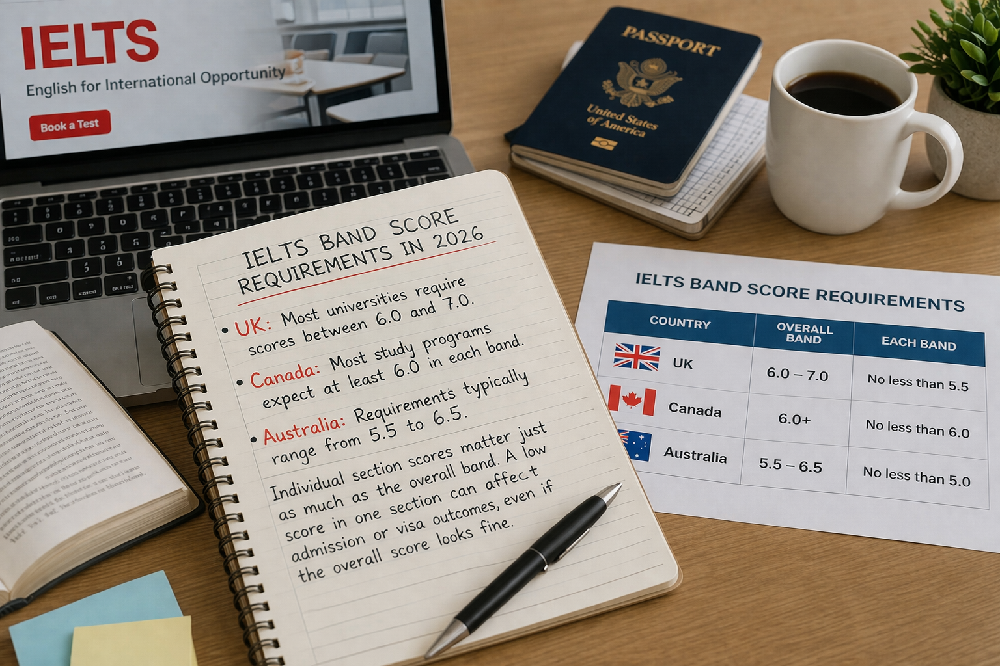
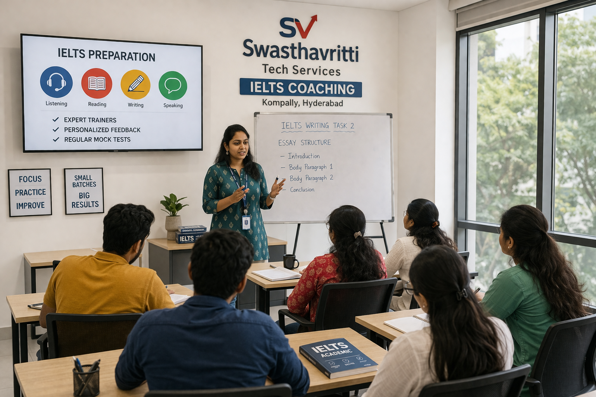

IELTS is one of the most widely taken English language tests in the world, with millions of test-takers every year. In 2026, there are some notable updates to how the test is delivered and evaluated. More test centers are switching to computer-based testing, candidates can now retake a single section if unsatisfied with their score and the test places greater emphasis on genuine responses over memorized answers. For students, understanding these changes is essential, the right preparation method can directly impact your score, even if your English level is strong. This guide breaks down the updates and how you should adjust your approach.
The Biggest Change in IELTS: Shift Towards Computer-Based Testing
This is a significant change for test-takers in India.IELTS is steadily moving towards computer-delivered formats. While paper-based tests remain available in some locations, most test centers are now prioritizing computer-based testing. Candidates are expected to be comfortable with typing and navigating on a screen.
In some centers, candidates may still have options for how they complete certain sections. However, the overall trend is clearly digital.
One major benefit of computer-based IELTS is faster results. Most candidates receive their scores within 1 to 5 days, which is especially helpful for those working against university or visa deadlines.
Writing in 2026: Focus on Clarity Over Memorisation
This is one of the most important shifts in IELTS preparation.
Examiners now place greater emphasis on how well candidates respond to the specific question asked. Genuine, thoughtful answers are valued over memorized templates, and as questions become more specific, generic responses are unlikely to score well.
Task 1 Trends
Candidates may encounter a mix of visuals tables, pie charts, or multiple charts together. These require clear comparison and accurate data presentation, not just simple description.
What to Avoid
Overused phrases like "in a nutshell" or "in the modern era" can make responses appear rehearsed. Focus instead on clarity and directly addressing what the question asks.
What Works in 2026
Structured responses, logical flow, and accurate language matter more than complex vocabulary. Candidates who answer clearly and stay relevant are more likely to achieve higher scores.
Speaking in 2026: Natural Communication Matters
Examiners are trained to assess how naturally candidates communicate. Using overly complex or unnatural vocabulary can actually hurt performance. The focus is on fluency, pronunciation, and the ability to express ideas clearly.
The test may also include follow-up questions that explore responses in greater depth. Many Indian students rely on memorized answers, but this approach is not effective. A better strategy is to practice speaking on a variety of topics without any prior preparation.
Listening in 2026: Wider Accent Exposure
The IELTS Listening section features a range of accents and speaking styles, including non-native but fluent speakers. For Indian students, this can be both a challenge and an advantage.
Question formats may also vary, so relying solely on older practice materials may not be enough. Using updated resources is strongly recommended.
What Band Score Do You Actually Need in 2026?
Requirements vary by country, course, and visa type:

- UK: Most universities require scores between 6.0 and 7.0.
- Canada: Most study programs expect at least 6.0 in each band.
- Australia: Requirements typically range from 5.5 to 6.5.
It's important to note that individual section scores matter just as much as the overall band. A low score in one section can affect admission or visa outcomes, even if the overall score looks fine.
A 2026 Preparation Strategy That Actually Works
Start with a full-length mock test under timed conditions using official IELTS practice materials that helps pinpoint weaker areas.
Most students aiming for Band 7 or above prepare consistently for 8 to 12 weeks. Improving by one band typically requires focused practice and regular feedback.
Write regularly and evaluate your responses against official criteria. For Speaking, record yourself on different topics and review your fluency and clarity. Take a full mock test every week to build exam stamina.
Most importantly, seek feedback from a trained IELTS instructor especially for Writing and Speaking.
IELTS Coaching at Swasthavritti in Kompally, Hyderabad
At Swasthavritti Tech Services, IELTS trainers stay updated with current exam patterns and focus on methods that actually work. Training is built around structured practice, individual feedback, and regular mock tests to steadily improve your English skills.

With small batch sizes, every student gets personal attention based on their specific needs. Both weekday and weekend batches are available in offline mode.